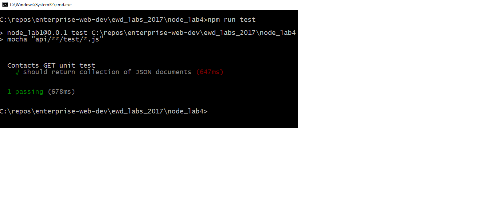

API Testing
This lab shows you how to test a Node API using Mocha, Should, and SuperTest.
Set up
You need a working version of the Contacts api for this lab. The solution to the last lab you completed will will do. Otherwise, you can get the solution from Github.
Create a new folder for this lab, for example lab-node4 and copy the contents of the last lab into this folder. Update the name and description properties in package.json to lab-node4.
Install dependencies
You need Mocha, Should and SuperTest. Install as development dependencies into your new lab folder as follows.
npm install --save-dev mocha npm install --save-dev should npm install --save-dev supertestAs we are writing code using ES6, we need to be able to transpile our unit tests using Babel. We can use the existing Babel configutratin for the lab but we need to add babel-core. Install babel-core as a dev dependency.
npm install babel-core
Create First Test
- To enable us to test the server.js code, we need to export the server object from server.js. We also need to import Mockgoose and the Node_Env variable from the config. Modify the server.js as follows:
... import {Mockgoose} from 'mockgoose'; import {nodeEnv} from './config'; export const server = express(); //replaces the previous server declaration ... - Create a
testfolder in the root folder of the lab. Create a new file called/test/testContactsApi.js.import supertest from "supertest"; import {server} from "./../server.js"; import should from "should"; // UNIT test begin describe("Contacts API unit test",function(){ this.timeout(120000);//increase timeout of tests to 2 mins. Starting Mockgoose can take time. // #1 return a collection of json documents it("should return collection of JSON documents",function(done){ // calling home page api supertest(server) .get("/api/contacts") .expect("Content-type",/json/) .expect(200) // This is the HTTP response .end(function(err,res){ // HTTP status should be 200 res.status.should.equal(200); done(); }); }); });
Include Mockgoose in server.js
Install Mockgoose as a development dependency
npm install --save-dev MockgooseIn our current solution, in server.js we connect to the database with the following statement:
... mongoose.connect(config.mongoDb); ...replace this statement with the following code:
... // Connect to database if (nodeEnv == 'test'){ //use mockgoose for testing var mockgoose = new Mockgoose(mongoose); mockgoose.prepareStorage().then(()=>{ mongoose.connect(config.mongoDb); }); } else { //use real deal for everything else mongoose.connect(config.mongoDb); } mongoose.connection.on('error', function(err) { console.error('MongoDB connection error: '+ err); process.exit(-1); }); ...
This code will wrap the existing Mongoose object with Mockgoose only if the Node_Env is set to test (i.e. we're running test cases).
Setting NODE_ENV
NODE_ENV is an environment variable. We need to set NODE_ENV to ‘test’ when we run out unit tests. We will also need to set it back to 'development' when we're updating the code. Setting environment variables differs across Operating Systems/platforms. Cross-Env is an NPM package which uses a single command to set environment variables without worrying about the platform.
Install Cross-Env as a development dependency:
npm install save-dev cross-envNodemon
When we change things in a Node.js project, a restart is required for the changes to be reflected in the running process. This can be very time consuming. Instead of manually restarting Node, we will install the
nodemonpackage, which can monitor our files and auto-restart Node for us when we save changes to disk.Install Nodemon:
npm install --save-dev nodemon
Update package.json
Replace the script entry in the package.json file with the following.
"scripts": { "start": "cross-env NODE_ENV=development nodemon --ignore hackerNews/* --exec babel-node server.js", "test": "cross-env NODE_ENV=test mocha --compilers js:babel-core/register" }The above script entry for test will set
NODE_ENVto test and then run mocha against the files matching the pattern provided (i.e. the test folder). We also updated the start script to setNODE_ENVto 'development' before starting the server.Now test by running the test script:
npm run testYou should see something similar to the following: 
Testing the Contacts API
Now lets try to test the add contact function of the API.
- Add another unit test to the last test. This time we'll use SuperTest to post a new contact and test for the correct status:
Now run the test again// #2 add a contact it("should add a contact",function(done){ // post to /api/contacts // calling home page api supertest(server) .post('/api/contacts') .send({name:"Contact 99",address:"123 Strand St"}) .expect("Content-type",/json/) .expect(201) .end(function(err,res){ res.status.should.equal(201); res.body.contact.should.have.property('_id'); res.body.contact.name.should.equal('Contact 99'); done(); }); });npm run test. You should see something similar to the following:
Delete a Contact
For this test, you will delete the first contact in the list returned from the API:
- Enter the following code:
it("should delete contact",function(done){ // post to /api/contacts // calling home page api const superserver = supertest(server); superserver .get("/api/contacts") .expect("Content-type",/json/) .expect(200) // THis is HTTP response .end(function(err,res){ const id = res.body[0]._id; superserver .delete("/api/contacts/"+id) .expect("Content-type",/json/) .expect(200) // THis is HTTP response .end(function(err,res){ res.body._id.should.equal(id); res.body.should.have.property("name"); done(); } ); } ); });
Challenge
Develop a test for the following route in the Contacts API
PUT /api/contacts/[:id]
Use the notes and online resources for support.
Report Generation
At the moment, the tests report back to the console. It would be good to generate a unit test report that Visualize your test results. We'll use Mochawesome to do this.
Install Mochawesome to you dev dependencies.
npm install --save-dev MochawesomeTo output the results, update your test script in package.json to the following:
"test": "cross-env NODE_ENV=test mocha --compilers js:babel-core/register --reporter mochawesome"Now run the tests again. Mochawesome will generate reports in the /mochawesome-reports/